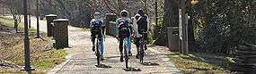
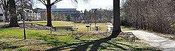
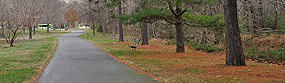
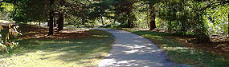
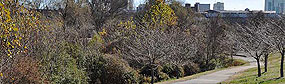
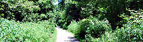

WS Greenways is a citizen advocacy group working to get more people onto the ten greenways found throughout Winston-Salem. Our goal is a city-wide network of trails connecting destinations for work, play, school, shopping and more.
This mobile site provides information about each greenway/trail and accessibility to it, as well as a Google map. Upcoming events on the greenways are also provided.
     NOVEMBER !9
WS Greenways presents a talk by Russ DuBois, executive director of the Creative Corridors Coalition, who will discuss his organization's efforts to make downtown Winston-Salem's roadway infrastructure more attractive and more pedestrian friendly. Please join us! 7 p.m., location TBA.
NOVEMBER 3
At the Salem Lake Dam Walk and Talk you can learn about the newly completed dam from engineer Courtney Driver. The walk to the dam will begin at 3 pm at the fishing station. After the talk, everyone is encouraged to either walk or bike the Salem Creek Greenway or Salem Lake Trail, so bring your bike or your walking shoes! Rescheduled from October. For more info, call 336-703-3110
NOVEMBER 4
This week's Community Bike Ride will be backwards, sort of. Instead of starting and ending at Caffe Prada, as usual, riders will start and end at Wake Forest University, with a gelato stop at Caffe Prada along the way. Riders will join Wake students, faculty and staff to help raise awareness of biking among the WFU community and to draw attention to the need for improved bicycle and pedestrian corridors between WFU and downtown Winston-Salem. The first 25 to sign up will get an official WS Greenways water bottle, and everyone gets a free gelato. The slow-paced, ten-mile ride is open to all. 3 to 5:30 p.m., starting at the ZSR Library on the WFU campus. Sign up here. Co-sponsored by the WFU Institute for Public Engagement.
OCTOBER !3
Check out the city's proposed master plan for the quarry site park, which includes the Waughtown Connector Greenway The 200-acre site will be developed for public recreation use while incorporating measures to conserve the unique ecosystem that has developed in and around the water bodies in the old quarry. 10 a.m. to noon at the W.R. Anderson Jr. Recreation Center, 2450 Reynolds Park Road.
OCTOBER 14, 21, 28
Winston-Salem Community Bike Ride often includes the city's greenways on its ten-mile route, which changes each Sunday. Everyone is welcome. Rides begin at Caffe Prada, corner of Broad and Fourth streets. Start times are in flux this month. For more info look here.
OCTOBER 16
At its Annual Community Celebration, our friends at the Creative Corridors Coalition and the City of Winston-Salem will unveil the design concepts for the Salem Creek Connector, a roadway that will cross the Salem Creek Greenway as it connects U.S. 52 with downtown. Creative Corridors is working with NCDOT to make the project more aesthetically attractive and reflect the city's devotion to arts, culture and innovation. 5:30 p.m. at Wake Forest BioTech Place, 575 North Patterson Ave.
OCTOBER 21
2nd Annual Tour de Winston 5K Walk & Tour will take participants over or under 10 of the bridges that are being re-imagined by the Creative Corridors Coalition in preparation for the massive redevelopment of Business 40 through downtown. You can walk at your own pace or in group led by CCC guides, and you can voice your ideas for making downtown's corridors more attractive and pedestrian-friendly. Adult entry fee of $15 includes t-shirt, sandwiches from Camino Bakery, snacks from Chad's Carolina Corn, and admission to the post-walk party featuring music, games and giveaways. Children 12 and under participate for free, and all children who complete the walk will receive a free scoop of frozen custard from Wolfies. Registration at 2 p.m., walk begins at 3, and post-walk party is 4 to 6 @ Corpening Plaza, 231 West First St.
OCTOBER 27
If planting trees on the Newell/Massey Greenway this Saturday doesn't sound like your cup of tea, then we've got an excellent alternative for you: You can plant a bush at Bethabara Greenway instead! Our friends at Forsyth Audubon are installing a bird-friendly landscape of berry-bearing native trees and shrubs at the new entrance to Bethabara Greenway, next to Bethabara Moravian Church, 2100 Bethabara Road. If you'd like to help, bring work gloves and tools such as shovels, pitchforks, large watering cans and wheelbarrows, if you have them. If not, just bring yourself, from 10 a.m. to 1 p.m.
OCTOBER 27
The second-annual autodrop slingshot lets teams of bicyclists set their own route to reach as many predetermined checkpoints as possible. Checkpoints are within a 50-mile radius of Winston-Salem, or you can choose the 'local yokel' race to stay within Forsyth County. Either way, riders must return within a strict 7-hour limit. We hear that some of the checkpoints involve Winston-Salem's greenways! Details here.
OCTOBER 27
This year's Community Roots Day includes tree-planting on the Newell-Massey Greenway. Sponsored by the Community Appearance Commission, Keep Winston-Salem Beautiful, and the City of Winston-Salem Vegetation Management Department, this volunteer tree-planting event has been adding shade, fresh air and extra character to our neighborhoods for twenty years now. It's 9 a.m. to noon. Registration at the ball fields at 2790 New Walkertown Road. If you are interested in participating go to this link, call 727-8013 or write georges@cityofws.org.
OCTOBER 6
WS Greenways will be cleaning up Bushy Fork Greenway as part of the Big Sweep, a community-wide cleanup of local waterways sponsored by Keep Winston-Salem Beautiful. All supplies and lunch are provided. If you want to help, just email us at wsgreenways@gmail.com so we'll know how many lunches to order! Oh yeah, and dress for wading, if you're up to it. Directions: From downtown WS, take Business 40 to the Lowery Street exit. At the end of the ramp, turn right onto Lowery Street. The greenway entrance is 0.8 mile on the right. GPS coordinate 36.094427,-80.218855.
OCTOBER 7
At the Salem Lake Dam Walk and Talk you can learn about the newly completed dam from engineer Toneq McCullough. The walk to the dam will begin at 3 pm in the parking lot off Salem Lake Road. After the talk, everyone is encouraged to either walk or bike the Salem Creek Greenway or Salem Lake Trail, so bring your bike! For more info, call 336-703-3110